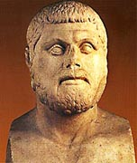

Forums galactiques > Taverne galactique : lieu de discussion informel > Quiz General
Pages : 1 2 ... 33 34 35 ... 43 44
dark 05/08 ETU 23:45 | sinon tu demande o gar si g le droit d'aller o pradi! 'sil di non c kil ment et sil di oui c kil men pa! tous simplement |
Nenel 06/08 ETU 01:35 | Les gardiens ne peuvent pas juger si t'as le droit d'aller au paradis ou pas. Essaye encore ;) |
gégé 06/08 ETU 07:25 | Il faut demander "Que me répondra l'autre gardien si je lui demande où est la porte du Paradis ?". Il faut alors prendre l'autre porte. Explication détaillée: 1ère hypothèse : (1) Le gardien à qui je m'adresse ment toujours. Si je lui demande "Que va me répondre l'autre gardien (qui dit toujours la vérité) si je lui demande où est la porte du Paradis ?" il me mentira et dira l'autre porte (l'enfer). Je prend alors l'autre porte c'est à dire le Paradis. (2) Le gardien à qui je m'adresse dit toujours la vérité. Si je lui demande "Que va me répondre l'autre gardien (qui ment toujours) si je lui demande où est la porte du Paradis ?" il dira la vérité (l'enfer). Je prend alors l'autre porte c'est à dire le Paradis. 2ème hypothèse : (1) Le gardien à qui je m'adresse dit toujours la vérité. Si je lui demande "Que va me répondre l'autre gardien (qui ment toujours) si je lui demande où est la porte du Paradis ?" il dira la vérité (l'enfer). Je prend alors l'autre porte c'est à dire le Paradis. (2) Le gardien à qui je m'adresse ment toujours. Si je lui demande "Que va me répondre l'autre gardien (qui dit toujours la vérité) si je lui demande où est la porte du Paradis ?" il me mentira et dira l'autre porte (l'enfer). Je prend alors l'autre porte c'est à dire le Paradis. |
Nenel06/08 ETU 09:15 | GG gégé ^^ T'as bien "trouvé" la réponse ;) |
gégé06/08 ETU 14:37 | Elle était passée dans Micro Hebdo... |
Nenel06/08 ETU 14:43 | Oki ;) |
gégé06/08 ETU 14:54 | Qu'est-ce que ferait Diana si elle était toujours vivante aujourd'hui ? |
dark06/08 ETU 14:55 | elle serait tro vielle pour vivre... |
gégé06/08 ETU 14:56 | Non |
Nenel06/08 ETU 14:56 | Je suppose qu'elle essaierait de sortir du cerceuil, mais bon, je vois pas comment elle aurait survécu pendant tout ce temps. ^^ |
gégé06/08 ETU 14:57 | Effectivement, elle gratterait le couvercle de son cercueil avec ses ongles. |
gégé06/08 ETU 14:58 | Pourquoi une femme met-elle plus de temps à s'habiller qu'un homme ? |
HK-48 06/08 ETU 15:10 | Parce-qu'elle ne trouve pas le bon trou pour passer la tête ? |
gégé06/08 ETU 15:12 | non |
Nenel06/08 ETU 15:13 | Pour pas sortir de route dans les courbes? |
gégé06/08 ETU 15:20 | Très bien ! 1.Pourquoi les femmes adorent faire l'amour le matin ? 2.Quel est le temps du verbe dans la phrase suivante : "Je suis enceinte" ? 3.Qu'est qui est rouge et qui coule blanc et chaud? 4.Quel animal peut changer de sexe en une seconde ? |
Alf 07/08 ETU 02:51 | Pour la 3 je dirais le pis d'une vache. |
gégé07/08 ETU 07:22 | Non |
Neil Armstrong 09/08 ETU 17:00 | 1. Pour avoir quelque chose de chaud dans le ventre avant d'aller travailler? |
| Thémistocle  09/08 ETU 17:13 | 3. Je pense à une bougie 4. Un petit animal bien sympatique : le morpion. |
Pages : 1 2 ... 33 34 35 ... 43 44
Forums galactiques > Taverne galactique : lieu de discussion informel > Quiz General